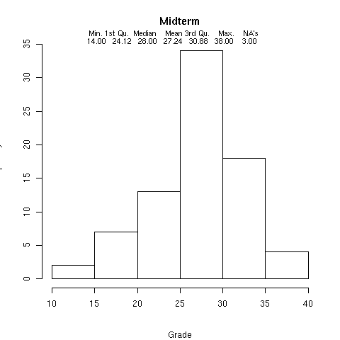
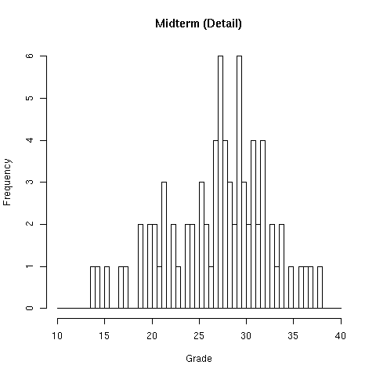

Stat 133 Midterm Exam Spring 2011
1 Grade Distribution
The two graphs shown below illustrate the grade distribution for the
midterm:


2 Answers and Grading
A copy of the midterm (pdf) with the answers can be found here. The following notes show how I subtracted points for incorrect
answers:
1 a) missing which -1
which(x,na.rm=TRUE) -.5
x[is.na(x)] not sum(is.na(x)) -.5
b) summing x, not !is.na(x) -1
dim instead of length -.5
is.na instead of !is.na -.5
c) assign wrong thing -1
using sub instead of = -1
d) forget return value -1
2 a) no ~ -.5
b) use sort instead of order -1
no indexing -1
missing , -.5
which used incorrectly -1
c) max instead of which.max -1
3 a) using strsplit instead of nchar -1
b) forgetting sapply -1
average or avg instead of mean -.5
c) using strsplit instead of nchar -1
using which incorrectly -1
not indexing book -.5
4 a) wrong first argument -.5
wrong second argument -.5
missing na.rm=TRUE -.5
b) which instead of sum -1
sum of data instead of condition -1
wrong logical condition -1
length instead of nrow -.5
d) not using table -1
5 a) not switching the order -1
not using sub or gsub -1
b) grep instead of sub -1
c) not using gregexpr -1.5
wrong pattern -1
not using unlist -.5
d) using gsub without ^ -.5
File translated from
TEX
by
TTH,
version 3.67.
On 4 Mar 2011, 11:14.